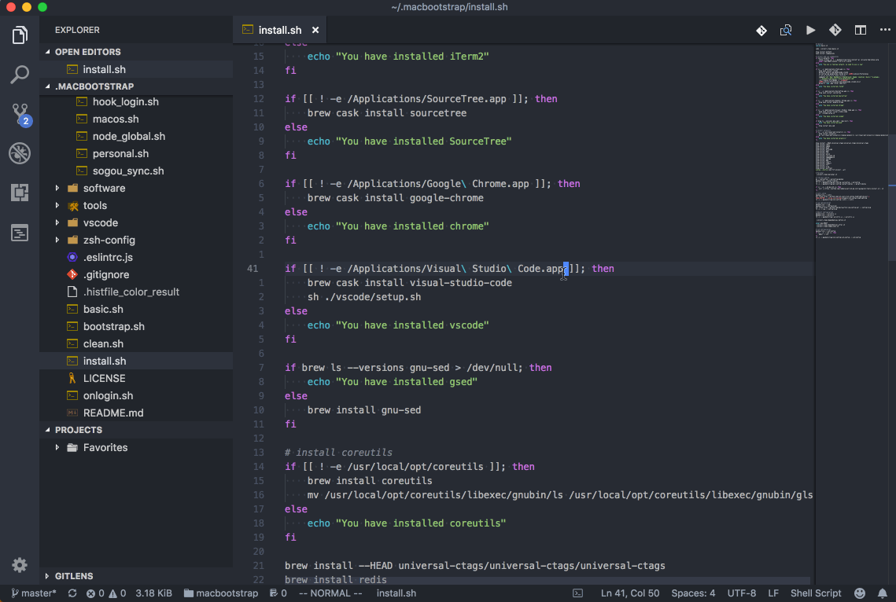
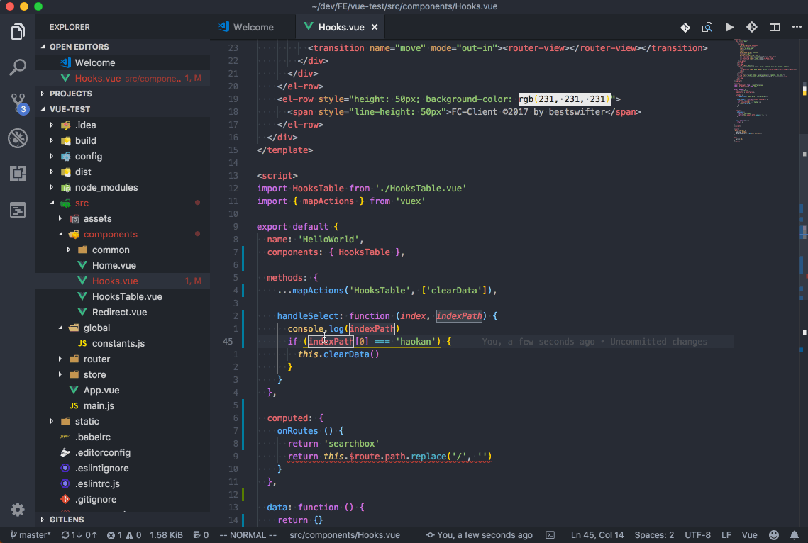

Vim 插件
在本章的开头，我就提到目前的主力 IDE 是 VSCode，其实和 Atom/Sublime 这类 IDE 一样，它也是模拟了 Vim 的按键，并不支持 .vimrc配置文件。不过 VSCode 的强大之处在于，它支持了部分 Vim 的插件。
我想，不需要我做过多解释，读者也能明白这几个被支持的插件的重要性了，必然都是 Life-Changing 系列的。下面就逐个介绍一下：
Easymotion
从名字就能看出，这个插件的目的是快速光标跳转。它支持按行跳转，按字符/字符串跳转和按单词跳转等。跳转时还可以选择方向为向前或者向后， 不过这就增加了一倍的复杂度，作为一个懒人，我一般选择全屏跳转。
我配置的快捷键有：
;s：按字符串跳转（跳转到开头）;w：按单词的开头跳转;e：按单词的结尾跳转;c：按字符串跳转;l：按行首跳转（忽略空格）

完整的快捷键列表可以查看文档。
Surround
上一节中介绍过文本对象（Text Object）的概念，它主要用来描述括号和引号中间的文本，但考虑一下变换：
"hello" -> 'hello'
如果想把双引号换成单引号，就远远比改变 hello 这个单词难了。而 Surround 这个插件的目的，就是为了方便对引号和括号做修改。
它支持以下几种用法：
y s motion + <char>：给指定范围添加 surround 字符，比如：ysaw"表示用双引号包裹单词。d s <char>：删除周围的 surround，比如ds"表示删除两侧的双引号c s <old-char> <new-char>：更换周围的 surround，比如cs"'表示把周围的双引号换成单引号。

Comment
大多数 IDE 都支持 Command + / 给当前行添加注释，而且会根据语言自动选择注释方式。
在 Vim 中，给当前行添加/取消注释的方式是用 gcc，虽然多了一个按键，但按起来更容易了，而且支持多行注释。这里前两个字符 gc 表示按行注释，最后一个 c 表示当前行。如果想注释当前行和下面一行，可以输入 gcj。
美中不足的是，有些语言（如 HTML）中 VSCode 会用 /* ... */ 的写法进行多行注释，这样如果想取消注释，就只能去注释开始或结束的那一行把注释全部取消，而不能只单独取消中间某一行的注释。
输入 gC 可以注释某一块代码，后面接一个文本对象，比如 gCi( 表示注释括号内的东西（不包含括号）。不过个人认为注释小括号的需求几乎不存在，但下面这个场景还是有的，考虑这段代码：
if (1 > 0) {
printf("Hello");
printf("wrold");
}
有时候我们只想注释掉那两行 printf，写点别的逻辑，有时候会注释掉整个 if。问题是，怎么用文本对象来表示呢？下一个插件可以让我们用文本对象的方式来表示某一块缩进
Indent
其实很简单，一般就两个文本对象：
ii：表示某一块缩进，不包含上一层，比如上面例子中的两个printfaI：表示某一块缩进，包含上一层，比如上面例子中整个的if语句
其实还有一个不太常用的，ai 表示某一块缩进，和它的上面一行，也就是上面例子中的前三行，不包括第四行的大括号。这在 Python 中非常常用，因为它没有大括号，完全靠缩进来区分代码块。
因此，注释掉两行 printf 的语法是 gCii，注释掉整个 if 语句的方法是 gCaI。

Sneak
sneak 是和 EasyMotion 差不多的插件，主打快速跳转的功能。用法是 s<char><char>，即按下 s 键后输入两个字符，可以跳转到下一个，这俩字符连续出现的位置。
然而相比原生的插件，VSCode 似乎有一个很严重的问题：不支持搜索高亮，这就导致我根本无法肉眼看出在当前位置和我的目标位置之间，隔了多少个 <char><char>，导致无法用重复来跳转，也不支持标签跳转。更何况这个功能以及由 EasyMotion 实现了（快捷键 ;s），所以我就不再研究了。